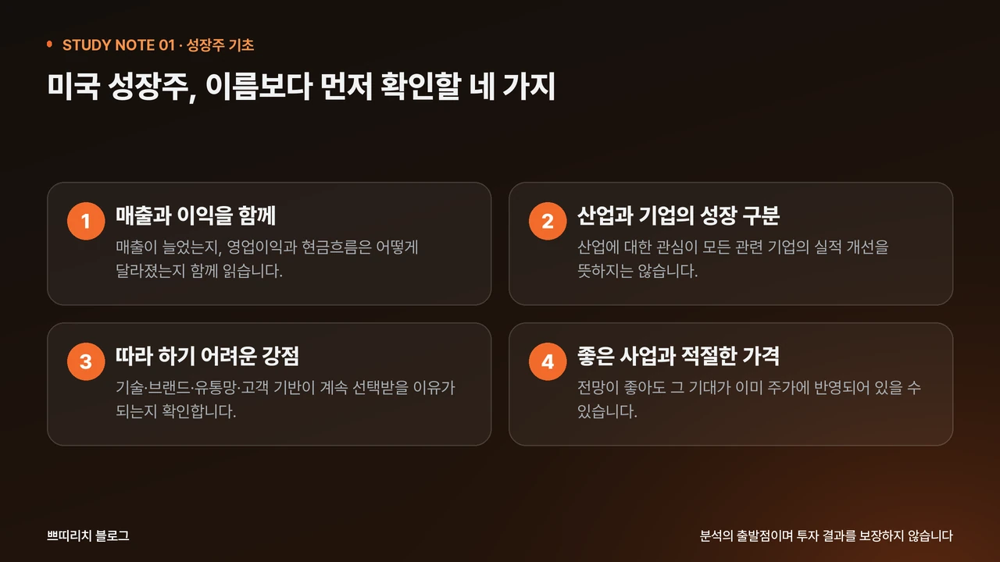
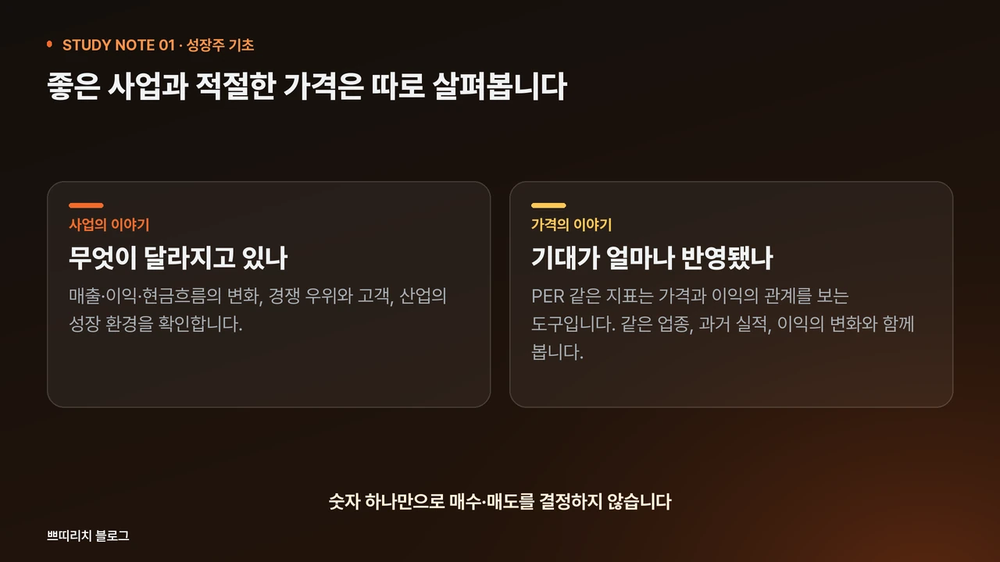

엔비디아, 애플, 테슬라. 뉴스에서 자주 만나는 이름은 투자 공부의 출발점이 되기도 합니다. 하지만 기업을 안다는 느낌과 사업을 이해하는 것은 다릅니다. 검색 결과에서 종목을 발견했다면, 다음에는 그 기업을 설명할 질문을 준비해 보세요.

1. 매출과 이익을 함께 봅니다
매출은 제품이나 서비스를 판매해 얻은 금액입니다. 매출이 커졌다면 사업 규모가 늘었을 가능성을 살펴볼 수 있습니다. 다만 가격 인상이나 기업 인수로도 매출이 달라질 수 있어, 숫자와 변화의 원인을 함께 읽어야 합니다.
영업이익은 본업의 수익성을 이해할 때 살펴보는 항목입니다. 매출이 늘어도 인건비나 연구개발비 등이 더 빠르게 증가하면 이익은 줄 수 있습니다. 여기에 영업활동현금흐름을 더하면 사업에서 현금이 어떻게 들어오고 나갔는지도 확인할 수 있습니다.
2. 산업의 성장과 기업의 성장을 나눕니다
AI, 반도체, 클라우드 산업에 관심이 커진다고 모든 관련 기업의 실적이 같은 속도로 좋아지는 것은 아닙니다. 수요가 어느 제품에 생기는지, 그 기업이 고객을 확보할 수 있는지, 사업 확대가 이익으로 이어질 수 있는지를 각각 질문해 보세요.
회사의 전망 설명만 읽기보다 실제 사업 부문별 실적과 위험요인도 함께 보세요. 앞으로의 수요는 예상과 달라질 수 있고, 성장하는 시장에서도 경쟁과 비용 부담이 커질 수 있습니다.
3. 경쟁사가 따라 하기 어려운 점을 찾습니다
기술, 브랜드, 유통망, 고객 기반은 서로 다른 종류의 경쟁력입니다. 업무용 소프트웨어처럼 서비스를 바꾸는 데 교육과 데이터 이전이 필요한 경우, 그 전환 비용도 분석할 항목이 됩니다.
중요한 질문은 ‘강점이 있다’에서 끝나지 않습니다. 고객이 계속 선택할 이유가 있는지, 경쟁사의 새 제품이나 가격 정책 때문에 그 강점이 약해질 수 있는지도 확인해야 합니다.
4. 좋은 사업과 적절한 가격을 구분합니다
기업의 전망이 좋아도 그 기대가 주가에 이미 반영되어 있을 수 있습니다. PER 같은 지표는 가격과 이익의 관계를 살펴보는 도구입니다. 숫자가 높거나 낮다는 이유 하나로 매수·매도를 결정하지 말고, 같은 업종과 과거 실적, 이익의 변화도 함께 살펴보세요.
관심 기업 한 곳에 적어볼 질문
- 어떤 제품과 고객이 매출을 만드는가?
- 매출·이익·현금흐름이 어떻게 달라졌는가?
- 성장 전망을 뒷받침하는 사실과 불확실성은 무엇인가?
- 경쟁 우위와 현재 가격을 각각 설명할 수 있는가?

처음에는 한 기업을 설명하는 연습부터
미국 성장주를 공부할 때 처음부터 모든 지표를 외울 필요는 없습니다. 기업의 공식 투자자 정보(IR)와 공시를 읽고, 이해한 사실과 아직 모르는 부분을 나누어 기록해 보세요. ‘유명해서’라는 이유가 사업에 대한 설명으로 바뀌는 과정이 기초 공부입니다.
읽은 내용을, 강의의 설명과 연결해 보세요.
기초 개념과 전체 목차를 확인하거나, 실제 무료 1강으로 설명 방식이 나에게 맞는지 살펴볼 수 있습니다.
무료 공개는 1강에 해당하며 전체 강의는 유료입니다. 무료 1강은 공식 강의실에서 확인할 수 있습니다. 수강 조건은 공식 상품 페이지에서 확인해 주세요.
원문과 참고 자료
팀 네이버 블로그의 주제와 키워드를 바탕으로 내부 학습 글로 재구성했습니다. 가상 계산 예시는 실제 기업 실적이나 투자 성과가 아닙니다.